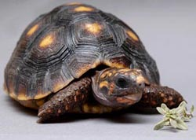
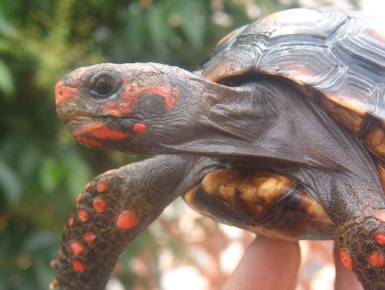
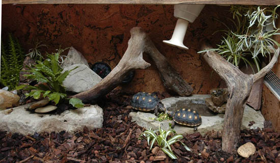
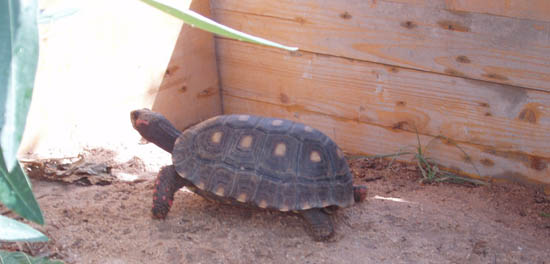
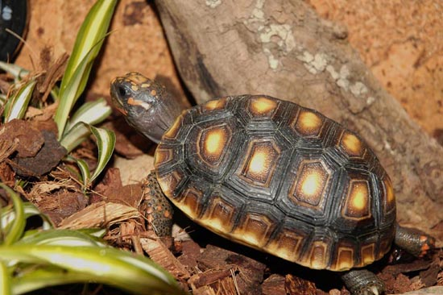
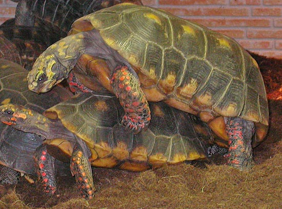

|
LA TORTUGA DE PATAS ROJAS:
Geochelone carbonaria
Francisco Sánchez, 2005
|
1 - Distribución.
2 - Hábitat.
3 - Características
de la especie.
4 - Mantenimiento en
cautividad.
5 - Alimentación.
|

Javier Senosiain. |
1. Distribución.
La Geochelone carbonaria o Tortuga de
patas rojas, se encuentra en las selvas tropicales del este y oeste de
los Andes, en Sudamérica. Tiene una amplia distribución a lo largo del
continente. Empieza a encontrársela ya en la región oriental de
Panamá, extendiéndose hasta el este de la Amazonia y una amplia franja
que abarca el centro de Brasil, Argentina y Paraguay.
También está presente en algunas islas del caribe.
2. Hábitat.
El hábitat de esta tortuga es selvático.
Habita en los bosques calidos y húmedos con alta pluviosidad, donde la
tierra esta suelta y la vegetación es abundante. También son vistas a
menudo por praderas de campo abierto y sabanas. Se diferencian dos
claras estaciones en su hábitat al año: la estación seca y la estación
húmeda. El hábitat de carbonaria es compartido en muchas zonas a lo
largo de su distribución con G. Denticulata, aunque esta última no
esta presente tan al sur.
3. Características
de la especie.
Esta tortuga es de tamaño
mediano-grande. Los adultos de esta especie fácilmente pueden alcanzar
los 40-45 cm., siendo lo normal una talla de 30-35 cm. Sin embargo no
es nada raro ver animales que superen los 50 cm., sobre todo en
animales ya viejos. Estas tortugas tienen caparazones robustos y
abombados, muchas veces presentando un estrechamiento en los laterales
del caparazón, que le dan una peculiar forma de reloj de arena, cosa
que la distingue a veces de Geochelone denticulata, en la cual ese
estrechamiento no existe, siendo los laterales rectos a ambos lados
del caparazón. La coloración de estas tortugas es muy llamativa. El
caparazón es de color oscuro, negro o amarronado, haciendo más
vistosas las manchas amarillas o anaranjadas que tienen en el centro
de cada placa, justo en la aureola central y más vieja. El plastrón es
de color pardo, con manchas amarillas y negras. Muchas veces en
algunos ejemplares esas manchas llegan a formar un dibujo. El color de
las escamas de la cabeza y extremidades delanteras varía según la
procedencia del ejemplar, variando entre el rojo escarlata, amarillo y
naranja. Según el origen de procedencia de los ejemplares el color
será más intenso y atractivo que en otros ejemplares de otras zonas
distintas. También se conoce que los ejemplares que viven en las
regiones más meridionales tienen la zona que rodea las aberturas
nasales hinchada y bulbosa, como es el caso de las carbonarias
comúnmente llamadas “cherry head” (cabeza escarlata). La coloración
del resto de las extremidades y cuerpo es de color negro o amarronado.
No todas las escamas de las patas delanteras son de color vivo, solo
son algunas escamas.

Variedad "Cherry Head"
(Jonathan
J. González).
Otras coloraciones de la cabeza
(Marcelo López).
4. Mantenimiento en
cautividad.
Alojamiento: Geochelone carbonaria, al
ser una especie de tamaño mediano-grande requiere de unas
instalaciones amplias. Como siempre se dice, si están alojadas al aire
libre los meses en los que el buen tiempo lo permita, mejor que mejor.
Como ya se ha comentado, es una especie que requiere de temperaturas
calidas y ambiente húmedo, por lo que tendremos en cuenta en todo
momento estos dos factores.
La temperatura puede mantenerse
inestable durante cortos períodos de tiempo (téngase en cuenta la
inestabilidad del clima en la mata Atlántica Brasileña donde se
encuentra también esta tortuga), así mismo soportan perfectamente
temperaturas de 16º C o menos, aunque no se aconseja que sea por mucho
tiempo. La temperatura no debería bajar en ningún momento de los 10º
C, si no enseguida empezarán a aparecer problemas respiratorios. Estos
datos que se dan son siempre para animales ya adultos o con un buen
tamaño, pues en crías o juveniles podrían aparecer complicaciones,
dado que estas son menos resistentes que los adultos. La temperatura
ideal para esta especie es de 24ºC a 30ºC durante el día, y por la
noche aplicar un descenso de 5ºC-10ºC, quedando ésta en unos 18ºC o 20ºC.
Cuando la temperatura supera los 32ºC empiezan a sentirse agobiadas
por el calor y van buscando zonas más frescas y húmedas para
guarecerse. La humedad es otro factor de vital importancia en esta
especie, siendo necesaria una elevada humedad ambiental en torno al
60% o 70%. Soportan bien periodos cortos de sequía, en los cuales la
humedad no es muy elevada, aunque no se aconseja que sea por mucho
tiempo pues los animales podrían sufrir una grave deshidratación. Si
el ambiente esta demasiado seco la piel de las tortugas comenzara a
resecarse y a estropearse, los ojos empezaran a lagrimear
constantemente y pronto aparecerán problemas respiratorios.

Alojamiento de interior para
juveniles (Javier Senosiain).
Estos factores (temperatura y humedad)
son fáciles de conseguir en una instalación cerrada. La temperatura
podemos aumentarla mediante sistemas de calefacción como bombillas,
esterillas, cables calefactores, etc., Es conveniente que los sistemas
de calefacción siempre vayan conectados a un termostato que controle
el nivel de temperatura, para así evitar posibles accidentes
producidos por una subida de temperatura. Los sistemas más utilizados
suelen ser las bombillas infrarrojas o cerámicas, que no emiten luz
visible pero si bastante calor. Cuando el animal se sienta frío irá a
la zona de debajo de la bombilla para calentarse, para retirarse
cuando haya alcanzado la temperatura corporal optima. Las bombillas de
calor deberían ir situadas en las esquinas de la instalación, para así
crear un gradiente de temperaturas amplio donde el animal pueda termo
regularse. De esta manera la esquina donde este situada la bombilla
será el lugar más calido y conforme se vaya alejando de la bombilla la
temperatura comenzara a ser más fresca. Con la humedad pasa lo mismo.
Podemos crear zonas más húmedas o menos húmedas, en función de lo que
nuestras tortugas necesiten, regando o pulverizando el sustrato. Lo
ideal es mantener un 60%-70% de humedad ambiental en toda la
instalación, proveyendo de algunos refugios con humedad algo más
elevada, para que cuando así lo quieran se puedan guarecer en ellos.
La humedad si que es algo más difícil de controlar, pues las propias
bombillas de calor u otros sistemas de calefacción se encargaran de
resecar el ambiente demasiado. Podemos solventar estos problemas de
varias maneras:
a) Colocando un
recipiente con agua bajo la bombilla de calor, para que de esta manera
evapore el agua y conseguir un ambiente más húmedo.
b)
Colocando plantas naturales (vivas) y regando a menudo su sustrato
para que permanezca húmedo.
c) Pulverizando manualmente o con
una manguera (modo aspersión) toda la instalación de nuestras
tortugas.
d) Colocando sistemas automáticos de riego que
pulvericen agua cada X tiempo sobre el sustrato de la instalación
(tipo nebulizador o aspersores).
Una vez que se tenga controlada la
manera de subir la humedad todo será más fácil. Estas tortugas se
sienten cómodas cuando se las pulveriza con agua, creando digamos una
“lluvia artificial”. Esta lluvia motiva a las tortugas bastante y por
lo general incita (al ver el agua en movimiento) a que las tortugas
vayan a beber a sus platos de agua, creando un autentico frenesí entre
los animales. También gustan de comer bajo las calidas lluvias.

Ejemplar adulto en instalaciones de
exterior (Francisco Sánchez).
Pasemos ahora con el substrato: el
sustrato debe ser siempre de tierra suelta y blanda, nunca de arenas
duras, ni gravas ni cosas por el estilo. La fibra de coco, mezclada
con turba o sola, es un sustrato ideal para estas tortugas, pues no se
apelmaza, no forma demasiado polvo (siempre y cuando este húmedo) y
retiene bastante la humedad, que es lo que a nosotros nos interesa.
Una mezcla de fibra de coco y turba a partes iguales (1:1) es lo
ideal. Tengamos en cuenta que el sustrato es lo que nos proporcionara
una mayor humedad ambiental, así, es conveniente mantenerlo húmedo y
suelto, pero nunca encharcado ni barroso. Se pueden añadir hojas ya
secas, ramas caídas y demás restos vegetales para dar una mayor
naturalidad al terrario y para que las tortugas se sientan más
seguras. De esta manera también nos quedará una instalación más
lograda para la vista humana y para las propias tortugas. También se
pueden añadir plantas vivas a nuestra instalación, formando parte de
la decoración y del hábitat en si. Plantas conocidas como el Pothos,
la Sansevieria o las bromelias son adecuadas para esta especie, ya que
conviven bien con el calor húmedo. El acondicionamiento de las plantas
debe ser en una zona que las tortugas no frecuenten mucho o a la que
no puedan acceder., ya que si quedan al alcance de las tortugas
seguramente serán devoradas o pisoteadas. El Pothos esta considerado
una planta tóxica si es ingerida por las tortugas, sin embargo, se ha
observado en cautividad que las tortugas se alimentan de ella por
accidente y no se aprecian síntomas ningunos de intoxicación.
Lógicamente no incluiremos el Pothos en la dieta de nuestras
tortugas. La instalación tiene que estar dotada de un refugio o
varios, para que las tortugas puedan refugiarse cuando así lo deseen,
aunque suelen pasar gran parte del tiempo escondidas en el. Nuestra
instalación debe estar provista de luz de amplio espectro, ya que el
UVA y el UVB son necesarios para la asimilación del calcio en el
metabolismo de la tortuga. La radiación ultravioleta se puede
conseguir mediante tubos de espectro total o bien mediante bombillas.
Hay que proveer zonas de “sombra” donde no de la luz, para que las
tortugas puedan resguardarse de la radiación ultravioleta cuando lo
deseen. En la instalación pondremos también un plato llano y poco
profundo con agua fresca y limpia, pues estas tortugas beben grandes
cantidades de agua. Y no solo beben, a estas tortugas les encanta
bañarse y pasar largos ratos metida en el agua. El nivel del agua no
debe ser muy alto ya que estas tortugas no saben nadar y podrían morir
ahogadas. Normalmente cuando se bañan suelen defecar en el agua, así
que habrá que cambiar el agua diariamente para evitar infecciones.

Juvenil de Geochelone Carbonaria (Javier Senosiain).
5. Alimentación.
La dieta de esta tortuga ha de ser lo
más variada posible, para que así puedan nutrirse de los diferentes
alimentos que les proporcionemos. La dieta en carbonaria no es tan
fibrosa como en otras tortugas (por ejemplo en las Testudos), pues su
aparato digestivo no llega a ser capaz de digerir grandes cantidades
de alimentos altamente fibrosos. Esta tortuga es más bien de dieta
blanda y de frutas. Se aconseja que el 60% de la dieta sea de
vegetales de hoja verde (como escarolas, lechugas, diente de león,
hojas de morera, etc.), y un 40% por ciento de una mezcla entre frutas
y hortalizas (como pueden ser la manzana, melón, berenjena, aguacate,
etc.). Esta tortuga en su medio natural también se nutre de pequeños
invertebrados como lombrices y larvas de otros insectos, así como
también de carroña y animales muertos, por lo que en su dieta
incluiremos la proteína animal con frecuencia. Se aconseja no
sobrepasarse con las cantidades de alimento de origen animal pues
tanta proteína podría provocar deformaciones en el caparazón y
problemas de riñón. Lo normal es administrar proteína animal dos o
tres veces al mes, aunque muchos aficionados prefieren darla una vez
en semana. Las fuentes de proteína animal son diversas, pudiendo ser
de pequeños insectos, invertebrados, carnes y otros preparados como el
pienso húmedo para gatos (que sea bajo en grasas) o pienso especifico
para tortugas de tierra. Se aconseja que cuando administremos este
tipo de alimentos se lo mezclemos con los vegetales que podemos
incluir en su dieta. Hay que tener en cuenta siempre la relación
calcio-fósforo, y proporcionar alimentos que siempre tengan el doble
de calcio que de fósforo (2:1), o más. Si los alimentos que
administremos son bajos en calcio deberíamos suplementar la dieta
añadiendo carbonato cálcico puro, espolvoreándolo encima de la comida.
Con esto (en conjunción con la luz UVA/UVB que sintetiza el calcio en
el caparazón y huesos de la tortuga) conseguiremos que nuestros
animales crezcan sanos y sin deformaciones, además de conseguir
también heces más duras y consistentes. A continuación paso a detallar
un listado con los diversos alimentos que podemos dar:
Vegetales de hoja verde , flores y
similares: acelgas, escarola, lechuga, endivias, berros, canónigos,
diente de león, tréboles, brotes de alfalfa, grama, malvas, cerrajas,
hojas de nabo y rábano, hojas de morera, palas de chumbera, hojas de
vid, coles, pétalos de rosa, flores de hibisco, flores de cayena, etc.
Otros vegetales de huerta: pepino,
calabacín, calabaza, tomate, zanahoria, berenjena, judías, guisantes,
habas, etc.
Frutas: manzana, pera, mango, sandia,
melón, aguacate, papaya, fresa, caqui, albaricoque, cereza o picota,
ciruela, higos, kiwi, melocotón, piña, plátano (con cáscara), uva,
ciruela, higo chumbo, chirimoya, nectarina, etc.
Alimentos de origen animal (proteínas):
grillos, tenebrios, saltamontes, lombrices, gusanos, babosas,
caracoles, crías de ratón sin pelo, peces de agua dulce e incluso de
agua salada, corazón de res, pollo, carne de todo tipo (no muy
grasas), pienso enlatado para perros o gatos (bajo en grasas), pienso
especifico para tortugas de tierra, palitos para tortugas de agua,
etc.
Esta tortuga es muy viva y voraz, en
cuanto se adapte a su nuevo hogar empezara a comer bastante y a crecer
deprisa, pues es una tortuga de crecimiento rápido. El “truco” esta en
conseguir una dieta lo más variada posible, así las tortugas estarán
completamente nutridas y sanas.

Apareamiento (Marcelo López).
|